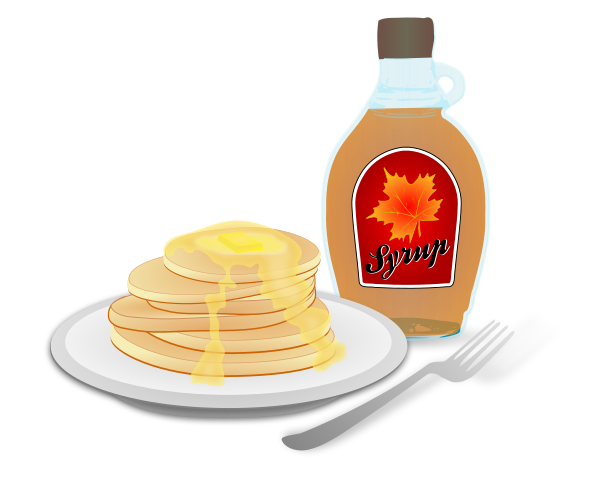

Pancakes

What a stack of pancakes may look like
Ingredients
- ¾ cup milk
- 2 tablespoons white vinegar
- 1 cup all-purpose flour
- 2 tablespoons white sugar
- 1 teaspoon baking powder
- ½ teaspoon baking soda
- ½ teaspoon salt
- 1 egg
- 4 tablespoons butter, melted
- small splash of vanilla
- cooking spray
Directions
-
Combine milk with vinegar in a mediium bowl, set aside for 5 minutes to “sour”.
-
Combine flour, sugar, baking powder, baking soda, and salt in large mixing bowl. Whisk egg and butter into “soured” milk. Pour the flour mixture into the wet ingredients and whisk until lumps are gone. Add vanilla and whisk until mixed.
-
Heat a large skillet over medium heat, coat with cooking spray. Pour ¼ cupfuls of pancake batter onto skillet and cook until bubbles appear on the surface. Flip with a spatula and cook until browner on the other side.
-
Enjoy!
Go back to startpage